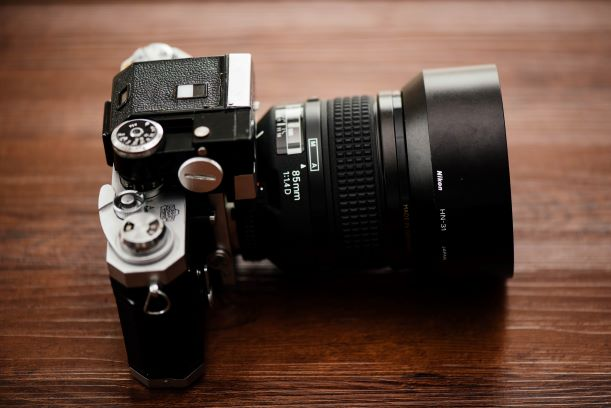

A camera is an optical instrument used to capture an image. At their most basic, cameras are sealed boxes (the camera body) with a small hole (the aperture) that allows light in to capture an image on a light-sensitive surface (usually photographic film or a digital sensor). Cameras have various mechanisms to control how the light falls onto the light-sensitive surface. Lenses focus the light entering the camera, the size of the aperture can be widened or narrowed to let more or less light into the camera, and a shutter mechanism determines the amount of time the photo-sensitive surface is exposed to the light.At IKEA we have all the latest cameras on sale.
lectronics comprises the physics, engineering, technology and applications that deal with the emission, flow and control of electrons in vacuum and matter.[1] It uses active devices to control electron flow by amplification and rectification, which distinguishes it from classical electrical engineering which uses passive effects such as resistance, capacitance and inductance to control current flow.We have a range of electronic gadgets to choose from at IKEA.
A computer is a machine that can be programmed to carry out sequences of arithmetic or logical operations automatically. Modern computers can perform generic sets of operations known as programs. These programs enable computers to perform a wide range of tasks. A computer system is a "complete" computer that includes the hardware, operating system (main software), and peripheral equipment needed and used for "full" operation. This term may also refer to a group of computers that are linked and function together, such as a computer network or computer cluster.Computers are readily available at IKEA.